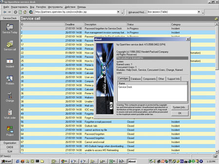
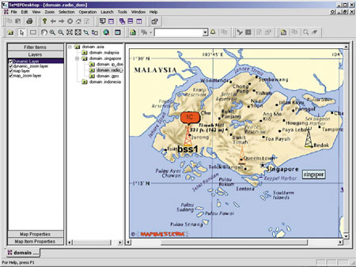
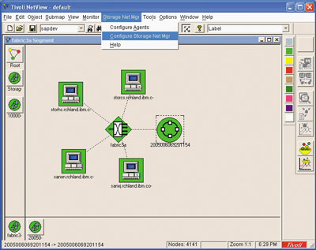

Андрей Ездаков
Быстрое развитие информационной инфраструктуры современного делового мира, появление новых сервисов и технологий имели не только положительные стороны. К сожалению, они привели и к возникновению ряда проблем. Чрезвычайно актуальными стали вопросы совместимости программных продуктов и форматов данных, информационной безопасности и управляемости сложной ИТ-инфраструктуры современной компании.
Географическая распределенность многих организаций, огромные объемы передаваемой и обрабатываемой информации, необходимость защищенного взаимодействия в режиме реального времени и ряд других потребностей сегодняшнего бизнеса породили новые технологии высокоскоростной передачи информации, архивации данных, новые протоколы и стандарты связи. Как следствие, потребовались интегрированные решения для комплексного управления сложными гетерогенными инфокоммуникационными системами. Сегодня спектр подобных средств весьма широк, в числе их производителей и признанные гранды ИТ-рынка (Hewlett-Packard, IBM), и другие не менее известные производители (Alcatel, Enterasys, Cisco и т. д.).
Платформа HP OpenView
Платформа HP OpenView компании HP (http://www.hp.com) представляет собой семейство модулей, реализующих отдельные аспекты управления сложными гетерогенными информационными системами (ИС). Благодаря модульности и гибкости настройки достигается разумный компромисс между сложностью конечной системы и сроками ее внедрения. Продукты семейства OpenView (рис. 1) предназначены для оперативного управления в различных сферах: для управления сетями, операционными системами и приложениями, производительностью системы, копированием и хранением данных, Интернет-услугами, сервисами.
|  |
| Рис. 1. HP OpenView за работой.
|
OpenView Service Desk
Универсальным средством для связи модулей в единую систему служит OpenView Service Desk, с помощью которого создается ролевая схема обслуживания клиентов. На первом этапе с поступающей информацией работают диспетчеры, т. е. дежурные операторы, которые отслеживают реальные данные непосредственно с консоли сообщений и обрабатывают возникающие ситуации. Затем в работу включаются эксперты, отвечающие за разрешение более сложных коллизий, для обработки которых у диспетчеров не хватает опыта или полномочий.
Для систем сетевого управления характерно большое количество приходящих сообщений о событиях в сети (traps, недоступность устройств и т. д.). Далеко не все эти сообщения действительно полезны оператору, а часто и мешают найти в общей массе первопричину проблемы. OpenView Service Desk обеспечивает визуализацию процессов в информационной инфраструктуре предприятия и создает интегрированную среду управления ими для ИТ-подразделений и поставщиков услуг. Он интегрирует информацию, поступающую от других модулей, и благодаря деятельности интеллектуальных агентов позволяет диагностировать текущую ситуацию, например, определять наличие и уровень важности повреждений в ИС. OpenView Service Desk также объединяет процессы управления конфигурациями аппаратных ресурсов сети и их изменениями, обработкой инцидентов и сбоев в общий поток операций. Это позволяет ИТ-службе не только оперативно реагировать на возникающие проблемы, но и решать большинство из них до того, как они отразятся на бизнес-процессах. Еще одна немаловажная функция системы - организация работы службы поддержки пользователей (Help Desk).
OpenView Service Desk использует общий интерфейс обмена данными на основе XML. Он связывает поступление обращения, выявление причины его появления и устранение проблемы в единый процесс управления качеством предоставляемых услуг. За извлечение информации отвечает специальная служба, устанавливающая связь с источниками данных по открытому интерфейсу ODBC.
Собственно программный продукт представляет собой объектно-ориентированное Java-приложение, основанное на отраслевых стандартах XML и TCP/IP. Трехуровневая архитектура OpenView Service Desk обеспечивает высокую степень масштабируемости и гибкость пользовательских настроек.
Кроме контроля текущей ситуации, в OpenView Service Desk имеются функции управления проектами различной сложности, в том числе и теми, в которых предполагается множество изменений аппаратных ресурсов и предоставляемых сервисов. Основное внимание в таких случаях уделяется инструментам управления информацией о происходящих переменах и их возможных последствиях для корпоративной ИТ-среды.
В качестве отчетных форм OpenView Service Desk использует графическое и табличное представление информации, пиктограммы и списки. Можно также реализовать отчеты в виде базы данных.
OpenView Operations
Еще один из продуктов семейства, OpenView Operations, ориентирован на управление корпоративной ИТ-инфраструктурой практически любого масштаба. Это ПО предоставляет централизованную единую технологическую консоль, позволяющую контролировать события во всей ИС. HP OpenView Operations отслеживает, фильтрует, проводит корреляцию и обрабатывает тысячи событий, происходящих ежедневно в сетевых устройствах, системах, базах данных и приложениях. Система поддерживает ОС Unix, Microsoft Windows NT/XP/2000, Novell NetWare, Linux, а также более ранние.
Независимые интеллектуальные агенты продукта обеспечивают безопасные и надежные механизмы связи, предварительную местную фильтрацию сообщений и корректирующие действия, необходимые для проактивного управления. Гибкие концепции управления позволяют выстраивать сложные иерархии, а развитая концепция ролевого распределения функций поддерживает масштабирование системы управления до любого размера. В результате HP OpenView Operations может управлять критически важными вычислительными средами, насчитывающими десятки тысяч элементов, причем не только приложениями, но и самими ОС.
HP OpenView Operations поставляется со стандартной защитой против пассивных атак (защищается весь сетевой трафик между центральной консолью управления и распределенными интеллектуальными агентами). Решение HP OpenView Advanced Security дополняет инфраструктуру связи HP OpenView Operations поддержкой средств идентификации, шифрования и контроля целостности данных. HP OpenView Advanced Security обеспечивает безопасность данных в каналах связи между центральными управляющими серверами HP OpenView Operations, распределенными интеллектуальными агентами и пользовательскими интерфейсами на языке Java.
В состав OpenView Operations входит служба корреляции событий ECS (Event Correlation Services), позволяющая решать проблемы множественного возникновения связанных между собой событий в сетях, системах, базах данных и приложениях. Технология ECS обеспечивает выявление взаимосвязей между событиями, происходящими на управляемых объектах, на которых установлены интеллектуальные агенты, и на управляющем сервере при любом сочетании источников событий. Интеллектуальный агент проводит корреляцию событий непосредственно на объекте управления, выявляя единую корневую причину однотипных событий, после чего высылает одно сообщение об этой причине на управляющую станцию. В результате минимизируется трафик между управляемым объектом и управляющей станцией, а число попадающих к диспетчерам сообщений существенно сокращается.
Развитый графический конструктор корреляционных схем ECS Designer позволяет разрабатывать новые схемы корреляции событий. С помощью режима моделирования можно проверить работу этих схем и развернуть полученную логику корреляции на интеллектуальных агентах управления.
В семействе продуктов HP OpenView также имеются специальные расширения Smart Plug-Ins (SPI), представляющие собой заранее настроенные, легко устанавливаемые модули, интегрированные с консолью HP OpenView Operations и добавляющие к ее возможностям функции управления основными базами данных, инфраструктурой Интернета, службами обмена сообщениями, бизнес-приложениями и платформами электронной коммерции. Сейчас существуют модули SPI для большинства критически важных бизнес-приложений, таких, как ERP-системы; базы данных; обмен сообщениями; Интернет и инфраструктура системы; электронная коммерция; средства Help Desk.
OpenView Performance
HP OpenView Operations легко интегрируется с HP OpenView Performance - решением для сквозного управления ресурсами и производительностью системы. HP OpenView Performance получает и поддерживает список аварийных сигналов, возникающих в любом узле распределенной вычислительной среды. Для обработки ситуации достаточно выбрать аварийный сигнал в журнале сообщений и просмотреть предоставляемую HP OpenView Performance подробную информацию о ситуации: критически важные показатели производительности (с корреляцией по времени), меры для локализации корневой причины возникновения проблемы.
Используя такого рода архивные данные, HP OpenView Performance дает возможность проводить углубленные исследования тенденций использования ресурсов и производительности. С помощью этой информации выявляются узкие места, способные привести к ухудшению качества сервиса. Продукт проводит непрерывный мониторинг критически важных приложений и ресурсов системы и предоставляет подробные отчеты, в которых фактическая производительность сравнивается с заранее определенными для организации критериями.
Средства HP OpenView Performance и Performance Agent совместно обеспечивают единый интерфейс для централизованного мониторинга, анализа и прогнозирования использования ресурсов в распределенных и гетерогенных средах, построенных на оборудовании многих поставщиков.
Продукт HP OpenView Performance Agent ведет мониторинг данных измерений для выявления исключительных ситуаций, которые обнаруживаются по значениям отдельного количественного показателя или комбинации показателей (для них можно задать как сами пороговые значения, так и длительность превышения порогового значения). Performance Agent выявляет все исключительные ситуации и генерирует соответствующие аварийные сигналы (тревоги).
HP OpenView Performance Agent, использующий технологию интеллектуального сбора данных, устанавливается на системах по всей распределенной вычислительной среде и проводит комплексный сбор данных измерений ресурсов и производительности из приложений, баз данных, сетей и ОС. Это ПО поддерживает отраслевой стандарт измерения времени отклика приложений ARM (Application Response Measurement), что позволяет измерять фактическое время сквозного отклика приложений и параметры транзакций. Затем HP OpenView Performance Agent собирает эти данные, суммирует их, регистрирует время и записывает в журналы - локально или в центральном хранилище данных.
Управление на базе TeMIP
Интеллектуальная платформа сетевого управления TeMIP (Telecommunications Management Information Platform) досталась Hewlett-Packard "в наследство" от Compaq. TeMIP был одним из первых продуктов, реализовавших концепцию управления сложной гетерогенной сетью; этим объясняется высокая популярность данного решения во всем мире. Причем TeMIP позволяет получать информацию о происходящих событиях и вносить необходимые изменения в сетевые параметры в режиме реального времени, т. е. вести активное управление.
В рамках единого процесса управления в TeMIP интегрируются все операции мониторинга производительности, поиска сбоев, конфигурирования и управления всеми доступными ресурсами и сервисами сети. В состав платформы входят модули сбора данных о состоянии элементов IP-сетей, использующие протокол SNMP. Она адаптирована под стандарт OSI (Open System Interconnection).
TeMIP используется как платформа управления для крупных распределенных корпоративных сетей (рис. 2), традиционных операторов связи и операторов мобильной связи, а также тех, кто использует IP-протоколы для передачи данных.
|  |
| Рис. 2. Платформа TeMIP для управления крупными распределенными сетями.
|
Преимущества TeMIP особенно заметны, если требуется регулярно расширять систему и увеличивать число ее клиентов. Интересен этот пакет и в том случае, когда у заказчика используется много оборудования от разных производителей. В силу ряда архитектурных особенностей продукта дополнительные финансовые вложения при этом будут невелики.
Уровни системы
В продукте TeMIP можно выделить несколько различных уровней интеграции. Уровень Inventory позволяет просматривать состояние всех устройств и линий связи, имеющихся в сети, вплоть до конечного коммутатора. На нем предусмотрена и организация контроля пороговых значений при возникновении потенциальной проблемы либо критического периода по величине трафика.
Уровень Trouble позволяет контролировать возникающие проблемы. Определяемые проблемы дифференцируются при помощи интеллектуального компонента, который позволяет проанализировать ситуацию и выдать точную информацию о том, что же реально произошло, с учетом корреляции событий. Например, если произошел обрыв линии в результате физического разрушения кабеля, то интеллектуальный контроль соберет все тревожные сообщения от разного оборудования, проведет анализ ситуации и выдаст решение о наличии единого источника неисправностей.
Следующий уровень пакета, Fault Management - управление сбоями. Если сбой в сети все-таки произошел и по результатам анализа ситуации очевидно, что это не разрыв линии, то возникает вопрос, можно ли удаленно управлять процессом восстановления работоспособности сети. Для решения задачи сначала разумно попытаться восстановить неисправное устройство, перенастроив его, либо перенаправить информационные потоки по резервным каналам или незагруженным линиям связи.
Configuration - уровень конфигурирования сети. Именно с помощью средств этого уровня осуществляется перенастройка информационной инфраструктуры сети связи, например, переключение на резервные каналы при перегрузке основных или возникновении неисправностей, определяемых на уровне Fault Management. Эти операции можно выполнять как вручную, так и в автоматическом режиме. Для последнего существуют определенные профайлы, в которых указывается стандартная настройка сети в каждой конкретной ситуации. Но чаще всего профессионально созданная "вручную" конфигурация позволяет получить какие-то дополнительные телекоммуникационные возможности.
Уровень Performance предоставляет возможность управлять производительностью всей системы в целом, в том числе IP-сетей и сетей передач данных. Поскольку у оператора есть визуальное представление всех участков сети и подсетей, он может самостоятельно или с помощью инструментов уровней Trouble и Fault Management оценить уровень их загрузки и заранее определить наличие в них узких мест. После чего он может перенастроить информационные потоки или подключить резервные мощности сети и емкости каналов связи, не позволяя ситуации перерасти в критическую.
Наибольший интерес представляет, пожалуй, уровень Service Provisioning. С помощью его средств и инструментов пользователи могут добавлять новые услуги в свои сети. Именно на этом уровне находятся специфические структуры TeMIP, называемые Access-модулями, которые позволяют подключать или адаптировать к системе связи новое оборудование практически в режиме реального времени.
Access-модули
При расширении сети с добавлением нового оборудования нужно обучить сотрудников работе с ним и приобрести специальное ПО - т. е. требуются дополнительные инвестиции. Если же используется управление TeMIP, то достаточно просто проверить, имеется ли в комплекте Access-модуль, соответствующий данному оборудованию, и если его нет - приобрести. Управление при этом остается единым. Новый Access-модуль добавляется в систему и начинает взаимодействовать с ядром TeMIP, после чего автоматически соединяется со "своим" оборудованием. Администратор сети просто получает информацию о том, что у него появился еще один тип оборудования и он может им управлять. А в соответствующих разделах пользовательского интерфейса системы сразу же появятся пороговые значения, режим функционирования оборудования и т. д. Таким образом, благодаря Access-модулям ИС более оперативно настраивается на установку и подключение нового оборудования.
В ядро TeMIP входит специальный инструментарий для разработки Access-модулей с удобным пользовательским интерфейсом. С его помощью пользователи продукта могут самостоятельно создавать новые модули без программирования. Но в основном разработкой Access-модулей все-таки занимаются сами производители телекоммуникационного и компьютерного оборудования.
Как работает TeMIP
Взаимодействие отдельных структур TeMIP происходит следующим образом: основная, базовая часть - ядро продукта служит "скелетом", к которому прикрепляются те или иные модули. Внутри "скелета" к ядру системы привязываются модули, реализующие описанные выше уровни TeMIP. Они обеспечивают необходимую функциональность управления сетью. Кроме них, с одной стороны присоединяются модули для организации пользовательского интерфейса, с другой - для работы с теми или иными технологиями. Такое архитектурное решение позволяет работать с отдельными частями TeMIP, необязательно иметь весь программный набор. Как правило, полная комплектация продукта не используется, а конкретное решение реализуется в виде набора модулей, соответствующего индивидуальным потребностям заказчика.
Пользователям пакет предоставляет широкий набор интерфейсов, Web- или графических (GUI). Однако "пользователем" в данной ситуации может быть не только человек; в том же качестве может выступать какая-то другая, внешняя относительно TeMIP, система. На этот случай предусмотрены интерфейсы в виде Q3- и CORBA-агентов.
Далее реализуется связь TeMIP с теми или иными системами. Именно здесь и устанавливаются Access-модули, которые могут иметь разный интерфейс. Это позволяет клиентам системы самостоятельно создавать модули даже для работы с тем оборудованием, к которому нет точного описания, т. е. организовывать контроль и управление устройством на уровне пороговых значений основных его параметров.
С использованием стандартного SNMP-протокола работают Access-модули, контролирующие поведение RMON и MIB. Посредством стандарта Q3 и соответствующих модулей TeMIP взаимодействует с интеллектуальными сетями.
Функциональность решения на базе TeMIP определяется в первую очередь нуждами пользователей. Допустим, необходима визуализация сигналов тревоги и типовой корреляции между событиями. Тогда в системе должен быть установлен специальный модуль корреляции, позволяющий на базе набора правил интеллектуально обрабатывать сообщения о сбоях и избегать ситуации повальной тревоги в случае одной аварии (см., например, описанный выше случай с разрывом кабеля).
Функциональные модули взаимодействуют с другими частями системы. Если пользователю, например, требуется журнал событий или специальное управление тревогами, это реализуется при помощи специализированного набора профайлов, позволяющих снять часть работы с оператора. Чем выше уровень автоматизации работы системы, тем менее квалифицированный человек может ею управлять.
В системе, созданной на базе TeMIP, есть и возможности обеспечения информационной безопасности. На этом функциональном уровне используется как SSL-протокол для Web-интерфейса, так и RSA-протокол защиты поверх TCP/IP.
Семейство Tivoli
Платформа Tivoli, продвигаемая компанией IBM (http://www.ibm.com), состоит из целого семейства программ, предназначенных для управления информационной инфраструктурой практически любого бизнеса. Она обеспечивает поддержку информационной безопасности ИС, контроль и управление работой приложений и хранилищ данных, используя интеллектуальную технологию самовосстановления для превентивной диагностики систем. Tivoli позволяет управлять воздействием ИТ-операций на бизнес и таким образом связать инфокоммуникационную инфраструктуру с соответствующими бизнес-процессами.
В состав платформы Tivoli входит несколько десятков модулей, тесно интегрированных между собой и реализующих практически все функции управления ИС. В процессе работы они собирают все данные, которые генерирует инфраструктура управления системами, о целом ряде параметров ИС, тенденциях использования, емкости и возможном недостатке ресурсов в центральном хранилище данных. На основе анализа этих данных разрабатывается процедура перенастройки ИТ-системы в соответствии с приоритетами бизнеса.
Благодаря открытой архитектуре Tivoli в ее среду могут интегрироваться решения независимых разработчиков, образуя полную систему управления технологическими ресурсами. Тесное сотрудничество IBM с независимыми разработчиками позволяет согласовать интерфейсы управления и использовать широкий диапазон альтернативных инструментов, встраиваемых в стратегическую платформу.
Системы управления на базе Tivoli позволяют значительно улучшить доступность, надежность, безопасность и целостность информационной среды предприятия. Лежащая в основе продуктов семейства сеть объектов обеспечивает масштабируемость до сотен тысяч объектов. Эта сеть также скрывает различия между разными типами объектов, объединяя их в общем логическом представлении, и таким образом обеспечивает кросс-платформенность получаемого решения (рис. 3).
|  |
| Рис. 3. Платформа управления Tivoli.
|
Tivoli Enterprise
Для создания интегрированной системы управления информационными ресурсами, независимо от масштаба предприятия и используемых платформ и приложений, служит программный продукт Tivoli Enterprise, компоненты которого обеспечивают централизованный контроль над корпоративными приложениями.
Tivoli Enterprise основан на открытых стандартах и позволяет организовать управление ПК и серверами из одной точки. С его помощью проводится автоматическое развертывание, администрирование и обновление управляющего кода. Продукт поддерживает широкий диапазон ОС, что обеспечивает бесшовное администрирование различных программно-аппаратных платформ. Кроме того, в нем реализована поддержка множества национальных языков NLS (National Language Support).
При модернизации ПО Tivoli Enterprise, как правило, достаточно провести обновление ПО только на сервере, а затем любое управляющее воздействие будет использовать уже обновленный код. Система управления рассматривает себя как одну из задач, работающих в информационной среде, и содержит средства мониторинга и управления собственными ресурсами.
Ключевой элемент управления Tivoli Enterprise - Tivoli Management Framework (TMF). Именно он создает распределенную среду, которая интегрирует все уровни информационной системы, включая ОС, приложения, распределенные сети и сетевые сервисы. В TMF реализована трехуровневая архитектура, состоящая из Tivoli Management Region Server, Managed Nodes/Endpoint Gateway и Endpoints. Такая архитектура обеспечивает работу системы управления ИС практически любого масштаба, до сотен тысяч клиентских мест и серверов, функционирующих по единым правилам. При этом с точки зрения системы операции управления будут выглядеть абсолютно одинаково, независимо от того, над какими ОС и каким количеством серверов и рабочих станций они выполняются.
Tivoli Management Region Server обеспечивает работу системы управления, поддерживает внутреннюю базу данных, координирует все коммуникации с Managed Nodes, предоставляет пользовательский интерфейс. В зависимости от того, какие задачи решаются в системе управления, на уровне Tivoli Management Region Server устанавливаются те или иные продукты Tivoli. Managed Nodes реализует масштабируемость системы управления.
Endpoint отвечает за управляемость систем. Это единственный компонент, который устанавливается непосредственно на рабочую станцию или сервер. Этот компонент (примерно 300 Кбайт исполняемого кода для платформы Windows) почти не потребляет ресурсов и не влияет на работу ОС и приложений. Компоненты Endpoint автоматически находят центральные управляющие программы и не требуют дополнительной настройки. Через TMF можно дополнять компоненты Endpoint программным кодом в зависимости от того, какие приложения функционируют в КИС.
Программа Endpoint Gateway поддерживает коммуникации с компонентами Endpoint. Один ее выход может работать с тысячами компонентов Endpoint, запуская управляющие воздействия. На этом уровне можно задать ограничения на ресурсы, выделяемые под задачи управления. Например, можно ограничить трафик в сети, создаваемый системой управления. В зависимости от топологии сети Endpoint Gateway может работать как совместно с Tivoli Management Region Server, так и на выделенных собственных ресурсах.
Помимо создания единой среды управления TMF предоставляет приложениям базовые сервисы, такие, как администрирование, авторизация и шифрование. Он также обеспечивает быстрый ввод управляющих модулей в эксплуатацию, управление с отображением логической структуры, мультиплексированную дистрибуцию для оптимизации трафика в сети, связанного с выполнением задач системы управления. В нем поддерживаются: масштабируемый защищенный клиент-серверный протокол для взаимодействия компонентов системы управления, функции удаленной автоматической установки, планирование операций управления, система нотификации. Специальный модуль RDBMS предоставляет приложениям Tivoli доступ ко всем основным промышленным СУБД.
Tivoli Security Management
Другой продукт семейства Tivoli, Security Management, состоит из нескольких интегрированных продуктов, образующих всестороннее и масштабируемое решение для централизованного управления безопасностью и контроля доступа. В его состав входят Tivoli Identity Manager, Risk Manager, Intrusion Manager, Access Managers и другие компоненты.
Tivoli Identity Manager - это защищенное автоматизированное решение для аутентификации и авторизации пользователей как в традиционных компьютерных средах, так и в среде электронного бизнеса.
Tivoli Risk Manager позволяет реагировать на различные угрозы и попытки вторжения. Этот продукт может централизованно управлять наиболее незащищенными компонентами системы, выявлять и пресекать атаки, угрозы и различные внешние воздействия. Для этого в нем имеются средства сбора информации и данных об угрозах от брандмауэров, маршрутизаторов, сетей, систем обнаружения вторжений для приложений и узлов, рабочих станций, а также специальные средства сканирования незащищенных компонентов системы.
Tivoli Intrusion Manager получает информацию о попытках вторжения (событиях) от контролируемых элементов и подает сигнал тревоги, который направляется на пульт обработки событий, согласно установленным в системе правилам. Благодаря ему можно с центрального пульта рационально реагировать на сигналы тревоги и даже фильтровать их, выявляя наиболее критичные для бизнеса. Tivoli Intrusion Manager способен одновременно централизованно контролировать безопасность до 20 систем. В него также входит модуль Crystal Reports, предоставляющий полный отчет о безопасности всей среды.
Tivoli Access Managers реализован в нескольких вариантах. Первый, Tivoli Access Manager for e-business, управляет набором приложений и Web-решений и реализует для них стратегию защиты. Это ПО обеспечивает защищенный доступ к основным приложениям и данным, расположенным в разных системах организации, а также высокую доступность и масштабируемость при выполнении транзакций с партнерами, заказчиками, поставщиками и сотрудниками.
Второй вариант, Tivoli Access Manager for Operating Systems, - это полное решение для расширения доступа и управления доступом к системам Unix и Linux. Оно обеспечивает безопасность на уровне мэйнфреймов, позволяет расширить контроль событий защиты, интегрируется с другими приложениями Tivoli, используя совместно с ними данные и пользовательские интерфейсы.
И, наконец, Tivoli Access Manager for Business Integration дает возможность приложениям WebSphere MQ создавать защищенные соединения между различными платформами. Это ПО максимально снижает вероятность нарушения системы защиты, помогает обеспечить защиту данных в очередях и при непосредственной передаче по сети, предоставляет средства для управления безопасностью ресурсов Web-Sphere MQ в гетерогенных системах.
Специальное средство Tivoli Public Key Infrastructure выдает цифровые сертификаты, необходимые для аутентификации пользователей и устройств, предоставляет для регистрации пользователей Web-интерфейс, который легко настраивается и может быть интегрирован в состав существующих бизнес-процессов. Оно поддерживает инфраструктуру открытого ключа для X.509 (PKIX), стандарты общей архитектуры защиты данных (CDSA) и отраслевые стандарты.
Используя промышленные стандарты и открытую объектно-ориентированную модель, Tivoli решает основные проблемы управления приложениями, включая развертывание ПО, контроль за доступностью ресурсов, автоматизацию выполнения задач, администрирование пользователей, защиту информации и многое другое.